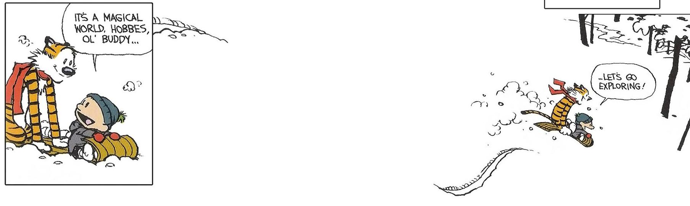

My name is Aatish Bhatia, and I'm a science communicator and a teacher. This is a place where I'm experimenting with something that's kind of new (well, new to me at least). It's part sandbox, part playground, part lab-in-my-basement, and I'm inviting you to peek in, take a look around, and tell me what you think.
Here's the basic idea. As a teacher and a writer, I often feel like I'm tugged in two similar but slightly different directions. We all love reading articles that help us understand the world, that feed our curiosity, and give us a glimpse of that deep sense of awe and mystery that comes from better knowing the world. This is the space where I've enjoyed reading articles about science, and on my better days, I've written a few as well.
But then, in the back of my mind, the teacher in me always has this nagging question. What if there was a way to do more? ...to take science writing a little further? We know from experience that even after listening to the most beautifully articulated presentation of an idea, our memory of it fades over time.
Decades of research in education (bolstered by a good dose of common sense) has shown that people are likelier to correctly remember new ideas when they engage with it more deeply than just listening, or reading. It's the kindergarden model of education that's slowly being adopted by college classes, where students spend more of their time learning by doing. All this research in education shows, quite convincingly, that one way to get the ideas you're communicating to stick is to invite your audience to participate more actively in the act of sense-making.
And so, the idea of this project is: what if reading an article could be a more interactive experience? What if an online article could be something that invited you to play with it, to poke and prod at it? Could we use the tools of the modern web, tools that allow us to do much more than share words and pictures, to engage an audience more deeply with our story of ideas? The central question of this project is: if we make writing more interactive, are the ideas that we're communicating likelier to stick?
My hunch is... maybe. It might turn out to not be worth all the extra effort, time, and expertise that it takes to make a story interactive. But it also might. And that's a good enough reason for me to give it a shot. So I've been busy teaching myself as much as I can about how to code and design for the web, and I'm starting to experiment with this mashup of science, writing, code, and pedagogy.
Quite a few folks have already begun experimenting in this space. Nicky Case is one of the most articulate and talented practicioners of this new craft, and has built amazing playable blog posts like Parable of the Polygons, along with Vi Hart. Here's how Nicky introduces this idea, which they're calling Explorable Explanations.
"What if a book didn't just give you old facts, but gave you the tools to discover those ideas for yourself, and invent new ideas? What if, while reading a blog post, you could insert your own knowledge, challenge the author's assumptions, and build things the author never even thought of... all inside the blog post itself?
What if, in a world where we're asked to constantly consume knowledge, we construct knowledge?
Explorable Explanations is an attempt at answering some of those questions. We're a totally unorganized "movement" (if you can even call it that) of artists, programmers, and educators who make things and tools for active learning. "
So, let's go exploring.
Get in touch with me over twitter or email.
You can find the source code for this site here.
This work is licensed under a Creative Commons CC BY 4.0 License. Feel free to adapt and remix it.
Spot a typo? Fix it here.
Ideas on how to make this better? Drop them here.